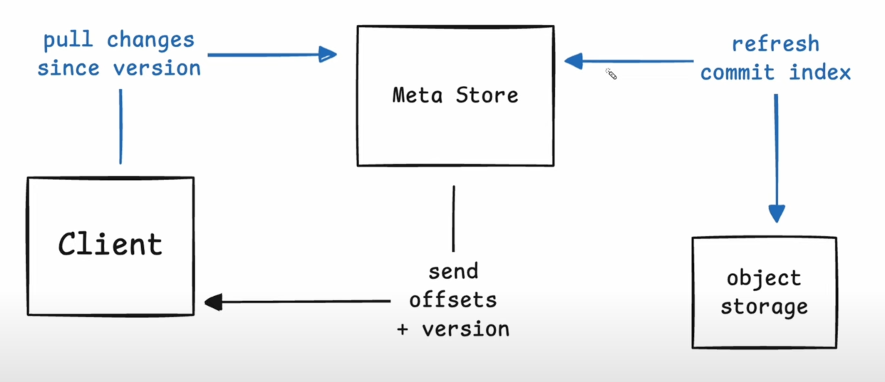

Carl Sverre
- Author of SQLSync (multi-player SQLite for local-first apps).
- Worked at SingleStore earlier.
Motivation
- While SQLSync got popular, Carl realized that the backend wouldn’t scale when he was trying to turn SQLSync into a product.
- What would be the ideal backend to make SQLSync work?
- Transactional object storage providing lazy partial edge replication at global scale.
Lazy
- Clients choose when to sync.
- Changes are rolled up, allowing clients to fast forward.
Partial - Clients choose what to sync.
- Clients learn what changes via sync and pull the actual data separately.
Edge - Clients choose where to sync.
- Client is lightweight and embedded in the application.
Replication - Clients see consistent snapshots of data. (internal consistency, snapshot isolation)
- Optimized for cost and reliability (at the cost of performance).
Carl ended up building Graft since he couldn’t find anything that met all his requirements.
Physical Organization
- Data is organized into Volumes.
- Volumes are sparse ordered sets of Pages.
- SQLite stores data in BTrees which map down to Pages.
- Graft Pages are small (4KB).
- For this talk, a page is a fixed-size block of bytes w/ the size being a power of 2.
Architecture
- Page Store: stores pages durably on an object store.
- Meta Store : maintain commit history of a volume.
- Metadata of snapshots (version no., set of segments and offsets that’ve changed inside of those segments).
- Performance is limited by object storage. SQLSync isn’t intended for realtime high performance but for async offline-first replication.
Client uploads changed pages (Durability Phase)
- Page Store is hosted on Fly.io. Client can connect to any page store world-wide. Page store instances buffer up many pages from different writers into segments. Writes are buffered and flushed every second.
- The object store returns a list of segment IDs that contain the pages corresponding to the client’s write request along w/ which offsets the client uploaded in each segment. Eg: Upload 10 pages which get split into say 2 segments. Offsets 1-5 landed in the first segment and so on.
- At this point, the data has been fully synced to object storage.
Client commits segment metadata
- How do we commit data into the next snapshot version of the volume?
- Client takes an array of segment metadata (segment and page offsets) and sends it to the meta-store which is responsible for ensuring that the version no. of a volume is monotonic and atomic.
- Only a single writer commits on a particular snapshot version.
- Eg: Client is at v1. Wants to make a write and transition to v2. It’ll send the segment metadata to the meta store and if v1 is the current latest version on cloud then meta-store will commit the change. Uses CAS (Compare-and-Swap) on object store. If it works then the meta-store confirms that snapshot is committed to the client.
- If there’s a conflict, the meta-store denies the request. The client has a list of segments & all the pages it wrote. It also retrieves the new snapshot version from the server and it can see what offsets have changed.
- The client can do a variant of MVCC locally because it has its own read and write set. It can check if the pages uploaded to the page store are valid or if they need to be recomputed. If the client decides that pages need to be updated, it can replay the commit on the new snapshot version.
- Doing client-side MVCC allows keeping the page store distributed instead of centralizing it.
- Q/A
- Are you actually waiting for the write to flush entirely to S3?
- Yes. Potentially in the future, a raft consensus layer w/ fast writers on NVMe disks can respond immediately.
- How tightly coupled are Graft pages and SQLite pages? Can a SQLite page cross multiple Graft pages? Would Graft work for other DBs?
- Technically, anything that can be mapped to the 4KB page size of Graft can be used w/ it. He has used it w/ key-value store, file-systems. Mis-aligned pages will have overhead though.
- Are you actually waiting for the write to flush entirely to S3?
Client pulls a set of changed page offsets

- Never need to store more data than what describes changing every page in the set because if the same page is changed multiple times, we only need to know that it’s changed and not that it changed multiple times.
- Client requests changes since a version. Meta Store is stateless so it first refreshes the commit index and then computes all of the offsets that’ve changed b/w the original version and the latest version.
- If the volume is a 1000 pages, the max. data the client will receive is a 1000
u32’s and a singleu64.
Client downloads pages as needed
- Once the client receives the set, it knows that new versions of pages exist and it needs to retrieve the pages it wants to read (doesn’t need to read the rest but it can).
- Client maintains a set of snapshots in its local state.
- Some threads in an app might still be operating on a previously downloaded snapshot.
- Graft allows the client to maintain local snapshots at different versions.
- If a page@version isn’t available in the local Graft cache, the client requests the page from the pre-fetcher.
- The pre-fetcher expands the requests for a single fetch into multiple based on patterns (like forward and reverse sequential reads, strided reads) using the Leap algorithm.
- strided : constant offset b/w consecutive reads.
- The pre-fetcher expands the requests for a single fetch into multiple based on patterns (like forward and reverse sequential reads, strided reads) using the Leap algorithm.
- The requests are then sent to the page store. Page store either has the segment cached in memory, NVMe disk or requests it from the object storage.
Q/A
- Do you calculate roll-ups on the metadata read everytime?
- Yes. When you do a poll, the metadata server calculates the rollups. To do this efficiently, a small set optimized (alternative to Roaring Bitmaps) is used.
- Roaring Bitmaps is a compressed bitset. It doesn’t work well w/ small no. of bits that are highly sparse. So Carl wrote a compressed bitmap (Splinter) which also allows extremely quick intersections and is zero-copy. Pages can be mapped from object storage directly to memory w/o any de-serialization. After verifying that the pages aren’t corrupt, they can be directly sent to and used by the client since it uses the same compressed bitset representation for calculations.
- What’s the relation b/w the pages and the actual files on S3? You mentioned batching for fewer requests.
- Graft uses segments which is just a collection of pages by many clients, into many volumes & at potentially different versions.
- In the case where you’ve millions of volumes, each segment would have thousands of pages.
- Future work: Like LSM trees that run on object storage, you’d want to merge and optimize data from sparse segments (different volumes) to segments with fewer (and larger) volumes. Files would be as dense as possible and optimized to read subset of segments into memory.